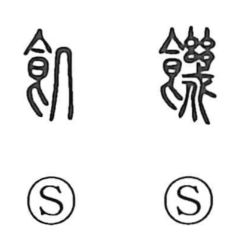

飢

Uncategorized
Kun: ueru, ue | On: ki
hunger ・ to starve ・ famine
Explanation
A phono-semantic graph built from the food element and the phonetic ki. The character is also written in the older form 饑, which uses 幾 as the phonetic; 幾 means few or scarcely any, sharpening the sense of having no food. Thus 飢 expresses hunger and starving. The component 几 is originally a pictograph of a small table; here it chiefly supplies the reading ki, yet its spare, skeletal outline can also call to mind the bone-thin state described as kotsuritsu, further coloring the idea of emaciation through lack of food.